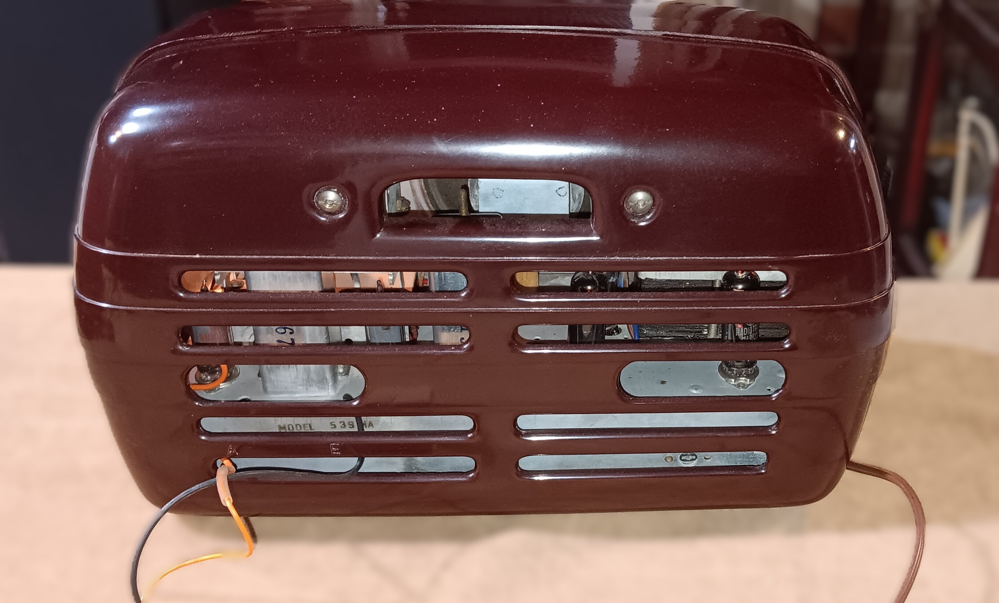
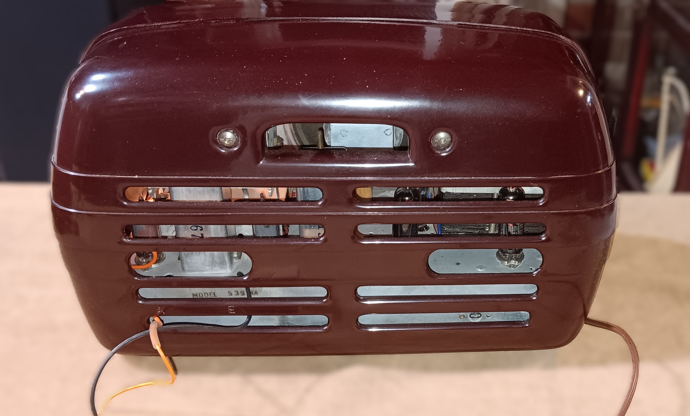

AWA Radiola 510MA
Manufactured: 1946, New South Wales


Acquired: 12 Aug 2023
Restored: 3 Nov 2025
AWA Radiola 517M
Manufactured: 1948, New South Wales
Acquired: 12 May 2020
Restored: 3 June 2021
AWA Radiola 539MA
Manufactured: 1952, New South Wales
 

Acquired: Feb 2019
Restored: 3 March 2021
AWA Radiolette 500MA
Manufactured: 1946, New South Wales
Acquired: Aug 2018
Restored: 3 June 2020
Astor EC Mickey Mouse
Manufactured: 1936, Victoria
Acquired: Dec 2019
Restored: June 2022

Original Astor advertisement, 1936
STC "Jelly Mould" 205
Manufactured: 1948, NSW
Acquired: Feb 2021
Restored: June 2021
Original STC advertisement, 1947
Stromberg Carlson 5A15
Manufactured: 1945, NSW
Acquired: 2017 Lou Albert collection
Restored: Sep 2018
Kriesler Panaroma 11-81
Manufactured: 1945, NSW


Acquired: 2019
Restored: March 2019
Stromberg Carlson Musiclock 55A12
Manufactured: 1955, NSW


Acquired: 2018
Restored: Dec 2018
Phillips 100
Manufactured: 1947, NSW


Acquired: 2017
Restored: Nov 2018

Original Philips advertisement, 1947
AWA The Fisk Radiola R52G
Manufactured: 1938, NSW
Acquired: 2023
Restored: May 2025
Original AWA advertisement, 1938